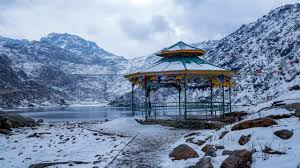
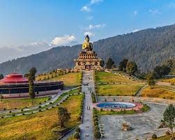
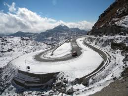

Gangtok

The capital city, nestled in the Eastern Himalayas, known for its scenic beauty, Buddhist monasteries (like Rumtek Monastery), and the spectacular views of Mt. Kanchenjunga.
Tsomgo Lake

A glacial lake considered sacred by both Buddhists and Hindus, located at a high altitude on the way to Nathula Pass, known for its serene beauty and yak rides.
Pelling

A small hill town known for offering the most magnificent, unhindered views of the Kanchenjunga peak, and for the ancient Pemayangtse Monastery.
Nathula Pass

A high-altitude mountain pass that connects Sikkim to China's Tibet Autonomous Region. It's a historical Silk Route, offering adventurous terrain and stunning views. (Requires permit)
Lachung and Yumthang Valley

A picturesque village (Lachung) and the surrounding Yumthang Valley (Valley of Flowers), known for its hot springs, rivers, yaks, and the abundance of unique Himalayan flora, especially rhododendrons.